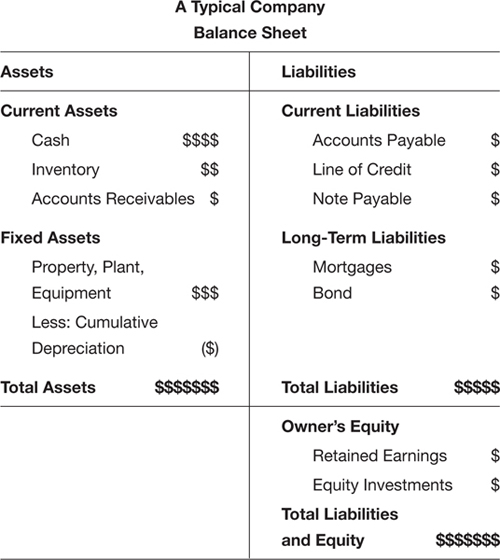
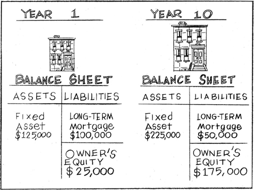
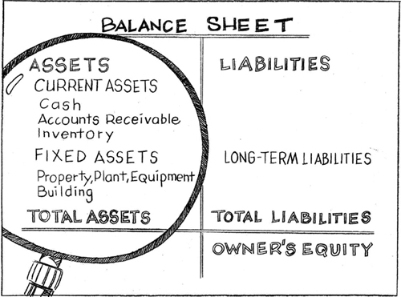
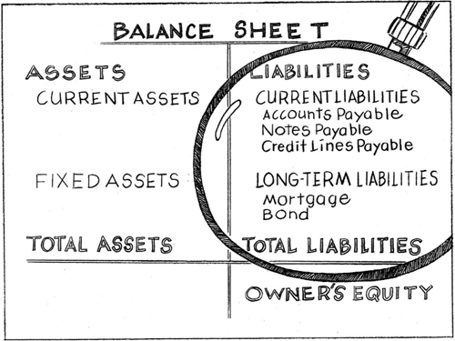
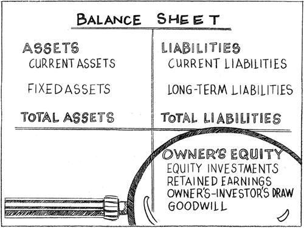

CHAPTER 7
What’s Your Company Worth?
The Balance Sheet Holds the Secret
In Chapter 1 we introduced you to the three gauges on your financial dashboard: the Net Income Statement (speedometer), Cash Flow Statement (gas gauge), and Balance Sheet (oil pressure gauge). Now it’s time to learn how the Balance Sheet indicates the overall health of a business.
If you ignore your oil pressure gauge, your engine can seize and your car will grind to a halt. If you ignore your Balance Sheet, so can the business.
If you attempt to continue to run the business without fixing the problems revealed on the Balance Sheet, you will be in pretty deep yoghurt. So it’s a pretty good idea to learn what the Balance Sheet measures; primarily, it measures the relationship between the value of assets the business owns compared to the value of the liabilities the business owes.
While the Balance Sheet gets a fair amount of input from the Net Income Statement and the Cash Flow Statement, it also introduces new elements like receivables, payables, and owner’s equity that you won’t find measured by any other gauge on the financial dashboard. In this chapter, we’ll define these terms, after first presenting the big picture.
WHAT THE BALANCE SHEET REVEALS
So you’ve been managing this business for a while and you’re getting tired. The question is, what’s it worth for all the time and effort and sacrifice put into it? Is the business only worth the breakup value of the computers, desks, equipment, and maybe the client list, or is there more to measuring its value? If so, what will help determine what the cumulative effects have been of all the decisions management has made since the business opened its doors? What gauge will we use?
The Balance Sheet holds the answer. It is a different animal than either the Net Income Statement or the Cash Flow Statement because it’s more comprehensive. It is, as I said in the opening chapter, a snapshot of the health of the business at a point in time. The aggregate results of all the product decisions, pricing decisions, marketing and sales activities, cash flow management practices, expenses incurred, debt decisions, and investment decisions are captured on this one, clean tableau. Figure 7−1 presents a typical small business’s Balance Sheet.
Any Balance Sheet, regardless of how complicated it looks on the surface, only has three sections to it: the assets, liabilities, and owner’s equity of the business.
Assets are what the business owns and has title to. Liabilities are what the business owes or obligations it needs to pay either now or in the future. The difference between the two is the owner’s equity (net worth) that’s been built up over time. Owner’s equity can be positive or negative. If it’s positive, that’s a good thing. If it’s negative, the little red light just went on and something needs to improve soon.

FIGURE 7−1
Think of the Balance Sheet as one of those old-time pan scales where the weight on one side—in this case, assets—has to be equal to the weight on the other—in this case, liabilities plus owner’s equity. Here’s how assets, liabilities, and owner’s equity relate to each other in a simple equation. This equation will always be true, whether you’re running General Motors or the corner convenience store.
Assets = Liabilities + Owner’s Equity
In a perfect world, asset values are larger than liabilities, which means owner’s equity is positive. If assets grow faster than liabilities, owner’s equity also grows. This is what you want. It is one measure (but not the only measure) that the business you’re managing is building equity value that could be sold at a future point in time.
Another way to think about the relationship between assets and liabilities is this: Assets are what the business owns, liabilities are how the business paid for those assets.
Assets – Liabilities = Owner’s Equity
This second equation will give us the exact same result as the first one—and it provides a little more insight.
I like this form of the equation because you can really see what’s going on. If we deduct what the business owes from what it owns, we have a clearer sense of whether our management decisions are growing or shrinking owner’s equity.
Owner’s equity is a derived number, which means we have to calculate it. It’s the number remaining after you deduct the value of total liabilities from the value of total assets. The Balance Sheet for the business will capture what assets and liabilities are, and owner’s equity is what’s left over—or sometimes, unfortunately, what’s in deficit. (Yes, it’s possible to have negative owner’s equity if liabilities are growing faster than assets. This is a condition that should be avoided like lead in household paint.)
Here’s a personal example of how owner’s equity and time interact. Happily, it is a positive one. After I graduated with my master’s degree, I bought a condo in New York City for $125,000. (Yes, it was a long time ago.) I put a $25,000 deposit down and took out a mortgage loan from the bank for $100,000. My personal Balance Sheet showed the apartment as an asset that has a market value of $125,000. It also captured the mortgage loan as a liability for $100,000 against that asset. My owner’s equity in that apartment was $25,000 at the closing. Over 10 years, apartments in New York became very valuable, so without my having to do anything, the apartment rose in value to $225,000. The asset value of the apartment rose by $100,000 and the owner’s equity on my Balance Sheet rose $100,000, as you can see in Figure 7–2. And, in fact, it rose considerably more than that, because during those 10 years I had been “paying down” my liability (the $100,000 mortgage).

FIGURE 7-2
In short, the Balance Sheet captures the assets and liabilities in business as it does in our personal lives; it shows what the business has accumulated over the course of its life and ultimately measures the net worth of the business.
THE THREE SECTIONS OF THE BALANCE SHEET
As I did with the other two gauges on the financial dashboard, I’m going to take you through the Balance Sheet step by step. The beauty of the Balance Sheet is that it captures the cumulative results of running the business over time. It includes assets built, liabilities incurred, and equity that has grown through the day-to-day, month-after-month, faithful management of customer relationships, cash, and expenses. So let’s go through the Balance Sheet, one section at a time.
Assets
Assets are cash or items that are convertible into cash. You’ll always find these items on the left-hand side of the Balance Sheet.
Figure 7–3 shows the assets you might find on a Balance Sheet.
Assets come in two flavors and only two flavors: current assets and fixed assets.
Current Assets
Current assets include cash (not just the green wrinkly stuff sitting in a bank account, but also money market accounts, short-term CDs, and other “liquid” instruments), accounts receivables (money owed to the business), and inventory (the stock on the shelves and in the warehouse) that can be converted into cash within 12 months. You may have been a little surprised by my use of the word “liquid,” but liquidity is an important concept that you must understand. It refers to how easy it is to sell an asset to convert it into cash. The more liquid an asset, the easier it is to sell. The difference between a current and a fixed asset is that the current asset is more liquid and can be converted into cash within 12 months.

FIGURE 7-3
Cash, accounts receivables, and inventory are typically the three major line items you’ll see under current assets on the Balance Sheet for businesses that sell products. For service businesses, you won’t see a line item for inventory because you’re selling time and expertise.
Cash Cash will always be the first line under current assets on any Balance Sheet. We like cash. The higher the cash levels, the better. Some accountants disagree, but since less cash is more frequently the problem than too much cash, I’m sticking to my guns.
The cash number on the Balance Sheet is fed from the Cash Flow Statement. It’s an indicator of how long the business can pay its bills without additional outside sources of cash. It is also a function of how well the business is converting net revenue into cash through its collections activities and how well the business is managing expenses to conserve cash. You learned all about this in Chapters 3, 4, and 5. All roads lead to cash. As you now know, if a business sells products and services but doesn’t collect on its invoices, cash withers to the point of bankrupting the company.
Accounts Receivable You will hear the term “accounts receivables” used interchangeably with the term “receivables” or “a receivable.” Just know they’re referring to the same type of current asset. If the plural is used, your accountant is talking about the total receivables for the business. If he or she talks about “a receivable,” in all likelihood the reference is to a particular customer or entity that owes the business money on a particular invoice.
When the business makes a sale and ships merchandise or fulfills a service, unless the customer pays cash right away, a receivable is generated on that net revenue. More gibberish? This means “an invoice is generated for the sale made.” You want the business to capture this and the Balance Sheet is the only place you’ll find that receivables number. It means the customer owes the business money to satisfy its obligation as part of the bargain.
That receivable is considered a current asset for the business because it is convertible into cash once the invoice is sent and the receivable is paid. And since all receivables are payable within 12 months, they are all considered current assets. Here’s how it works: When an order is shipped, it gets captured as net revenue on the Net Income Statement and as a receivable under the current asset category on the Balance Sheet. When that invoice is finally paid, receivables goes down and cash goes up on the Balance Sheet. Total assets on the left side of the Balance Sheet will remain the same, they just shifted categories. The Balance Sheet will reflect this.
The Cash Flow Statement will also show that inflow of cash, but remember, the Cash Flow Statement only reflects cash transactions, so it is blind to the money owed the business but not paid yet. (Stay tuned, because in Chapter 9 you see how all three work together to help you make good business decisions.)
Only the Balance Sheet captures accounts receivable. It’s good that something is keeping track of these, because they need to be closely managed to ensure that the business gets paid fully and on time. Remember Susie, the payables clerk from the previous chapter? Your receivable is her payable.
Weeks can pass between the time a client buys something and the time it pays its bills. A lot can go wrong between these two events. That’s why knowing what receivables are, which ones are aging, and managing them closely is one of the keys to maintaining a healthy cash position for the business. It’s also why we spent a dog’s age talking about specific ways to manage invoices in the previous chapter.
A “note receivable,” money the company loaned out that needs to be paid back within that 12-month window, might also be included among current assets, though notes are relatively rare.
Inventory Inventory is a current asset because it’s convertible into cash within 12 months, at least in theory. It’s always valued at the cost of direct materials and direct labor required to produce a finished product. In short, inventory is always valued at cost of goods sold (COGS).
Managing inventory can be pretty tricky business. The first thing you have to know is that inventory is nothing more than big piles of cash sitting on a shelf in a warehouse. If you didn’t have the inventory, what would you have? You’d have the cash.
Managing inventory is a balancing act. If the business carries too little inventory, it can’t satisfy all the demand for its products because it can’t ship the orders and invoice the customer to get paid. As a result, net revenue, gross margin, and cash levels all suffer. When inventory is too low, cash potential is not reached because there’s not enough available product to sell. This is a supply problem.
When inventory is too high, this can also create major cash problems, especially if the business sells seasonal or perishable inventory that has a finite shelf life. If inventory is much higher than demand for the product, too much cash went into manufacturing it and the sales are not there to convert it into net revenue and then back into cash. This is considered a demand problem.
That’s why it’s important to keep inventory levels as low as possible while satisfying customer demand. If the business has to throw out spoiled or marked-down out-of-season inventory, it still has paid for the cost of manufacturing it.
At the end of the day, either unbalanced situation is a result of inaccurate forecasting. Although no one can predict exactly what demand will be, here are some considerations that will help you manage inventory levels.
Effective inventory management has to do with matching as closely as possible the timing and quantity of the inventory to actual demand. You want to squeeze the lag time between the time a product is produced and a sale is made. The only way to achieve that without a crystal ball is to do everything possible to reduce the amount of time it takes to build inventory.
As customers indicate their true interest in a product, it’s always easier and less risky to build inventory based on what demand actually is, or real demand, instead of what you hope it’s going to be, or forecasted demand. “Responsiveness”—squeezing time out of the inventory process—is the only way to do this. Those companies that can produce inventory on demand are usually very profitable.
Once customers provide real feedback on what they want and how much of it they want to buy, then it’s time to trigger the inventory-making machinery. The less time it takes to build inventory, the less of it you need on hand at any point in time. The less inventory on hand, the more efficient the use of cash. Smaller batches built with greater frequency will always produce better cash flow and fewer excess or inadequate inventory problems. And that better cash flow will outweigh any benefit of the cost savings you might have gotten from economies of scale (purchasing raw material in large quantities cheaper, paying your suppliers less per item for a larger run, and the like).
If you had to err on higher versus lower inventory levels, I would err on the side of lower inventory levels, especially in a soft economy. Cash needs to be viewed and managed as the finite, precious resource it is. Cash is not king, it’s emperor. Don’t take it for granted. If a product you carry is sold out in a flash, that’s a good thing. While losing some sales due to inadequate inventory levels is painful, it’s still better than having paid for inventory that doesn’t sell.
What you want to avoid at all costs is returns! Returns are, as Don Corleone would say, il bacio della morte—the kiss of death.
No business wins when merchandise has to be returned. It costs money to pack and ship it back. It costs money to warehouse it. It costs money to insure it and to take physical inventory at the end of the year (which the IRS requires). Inventory can also get damaged during any of these stages. And, like the rest of us, inventory rarely increases in perceived value as it ages. In short, it’s a bear.
Another thing about building large volumes of inventory is that it’s always very difficult to know which products are going to sell well. We think we know, but honestly, the customer is always filled with surprises.
My company, Bedazzled Inc., sold screen-printed T-shirts. There was a butterfly T-shirt, and a picnic T-shirt. I thought the picnic T-shirt would sell best. I was wrong. The butterfly T-shirt was much more popular. Who knew? Well, in fact, I could have (should have!) taken a survey of my best friends. Or even asked random strangers at the entrance to the subway. Almost anything would have been smarter than just assuming I knew.
One of the most brilliant schemes to strike the balance between having adequate inventory to sell but not too much that the cash position was compromised was developed by the Bonobos Company, which sells made-to-order men’s casual pants. The entire customer experience is quite different from the average department store.
First the company creates one sample of each product in the line in all the sizes available. Customers make appointments, they try on the samples in a lovely showroom so they get personal attention, the customer places an order (and pays for it on the spot with a credit card), and Bonobos builds inventory and ships directly to the customer’s door. The customer usually waits several weeks to get their order because the company aggregates customer orders before it instructs the factory to build inventory.
The beauty of this system is that cash is not squandered on inventory that won’t sell. The biggest investment in inventory Bonobos makes is the manufacturing of the samples. That’s expensive on a per piece basis, but doesn’t compare to how expensive it would be if the company attempted to guess what demand would be by size and model and went ahead and built inventory, only to get it wrong and have to digest leftovers no one wanted. As demand for these great-looking pants grows, it’s likely inventory management practices will change and they’ll start taking some larger risks in building inventory in anticipation of demand. In the early years when cash is tight, this build-on-demand inventory management process makes perfect sense. It’s great risk management.
What are the most important things to remember about inventory management?
• Test the market with samples first, if you can, to know what is really going to sell.
• If possible, don’t build inventory in large quantities and eat up cash unless the business has the orders in its hands.
• Try to find strategic partners that have quick turnarounds for building inventory.
• Unless you have real-time data on customer demand and have an extremely tight connection to your suppliers, you’ll never get inventory forecasting exactly right.
• Err on the side of less rather than more inventory as a rule of thumb.
• If you have to make a trade-off between paying more per unit in COGS to reduce the cycle time to build inventory, choose the higher COGS and reduced production time. You’ll be placing smaller orders with greater frequency, turning inventory faster and cash faster. Read this point again—it’s not very complicated (place smaller orders, more frequently), but it’s really, really important for managing your inventory.
Here’s an illustration of this last point. If the time to build inventory is cut from six weeks to one week, in theory, the business will only need one-sixth the inventory it would normally need because the production line can move more quickly. That means the business locks up a lot less total cash in that inventory purchase. As inventory is sold, the supplier can replenish it faster if its production line is set up to do this. This makes the use of cash a lot more efficient. It also means the supplier can produce more of the most popular items so the risk of leftover inventory and returns is lower. Will the unit cost be higher? Yes. It’s okay to pay more per unit as long as the new COGS is low enough to ensure at least a 30 percent gross margin on those items. You’re essentially paying for the time you’re saving. I believe it’s worth it and will arm-wrestle any CPA who says otherwise.
Why am I spending so much time discussing inventory management? Because too many small business managers get it terribly wrong. If inventory levels are too high and the business runs out of cash, it could be the end of the road.
Service businesses do not have the inventory management challenge that product businesses do. The “inventory” that service businesses need to manage is time. The constraint here is the 24-hour day, which we spoke about in Chapter 3.
Fixed Assets Assets that are not easily converted into cash within 12 months—buildings, land, equipment, computers, and furniture, for example—are placed under the fixed asset category. This category is affectionately called, “property, plant, and equipment” or “PPE” for short. Plant and equipment will eventually have to be replaced, so they depreciate in value each year and that depreciation shows up as an annual expense on the Net Income Statement, but the cumulative expense, from the date these assets were purchased, shows up on the Balance Sheet. (The Net Income Statement only shows the expense for one calendar year, while the Balance Sheet shows the cumulative effects of what has taken place since the original purchase of that plant and equipment.)
Here are a few things to remember about the nature of a fixed asset. Just because an asset—for example, a building—may fluctuate in value, it doesn’t mean that asset doesn’t have value. Asset values as recorded on a balance sheet may fluctuate based on many factors, including changes in technology, shifts in the local supply and demand for real estate, and shifts in interest rates and rates of depreciation. Your accountant will know how to properly capture asset values and depreciation expenses. (Each small business is different, so I won’t attempt to go over all the “what if” scenarios in here.)
What’s important to know is that the difference between a current and a fixed asset is that 12-month time frame it takes to convert an asset into cash by selling it. Fixed assets take longer to sell and convert to cash.
Fixed assets also tend to be large purchases that have cash value but are not easily convertible into cash (that 12-month period is the sticking point). Most fixed assets, with the exception of property (land, that is, not the buildings on it), are depreciable assets. The value of a fixed asset on the Balance Sheet will reflect its purchase price less the total depreciation that has been taken (by your accountant) on that asset from the time it was purchased. (We looked at depreciation in some detail in both Chapters 2 and 5.) In other words, you’ll see a net asset value on the Balance Sheet for a building or a piece of equipment that will equal the purchase price minus the accumulated depreciation.
That covers the asset side of the Balance Sheet equation. That’s everything the business owns.
Since every ying has a yang, let’s now review the liabilities side of the Balance Sheet.
Liabilities
Liabilities will be found on the right-hand side of the Balance Sheet, which shows everything the business owes. These are the obligations of the business and, just as assets are split into current assets and fixed assets, liabilities are split into current liabilities and long-term liabilities. Figure 7–4 shows most liability categories you might come across on a Balance Sheet.
Current Liabilities A business’ obligations that need to be paid within 12 months are called current liabilities. These include accounts payable, notes payable, and credit lines payable. We’ll look at them one at a time.
Accounts Payable Invoices from suppliers for goods that have been shipped or services that have been rendered are called accounts payable (or “payables”). If the business keeps its accounts payable current—that is, if bills get paid on a timely basis—it will earn real points with suppliers when they must be asked for a favor. As you saw when I discussed managing cash in Chapter 5, it’s important to keep track of accounts payable because the obligation to the business is very real.

FIGURE 7-4
Managing cash matters because accounts payable is satisfied or paid with it. As you cut checks to pay outstanding bills, accounts payables on the liabilities side of the Balance Sheet goes down—as does the current asset cash—by exactly the same amount. The Balance Sheet will reflect this. The Cash Flow Statement will also indicate cash has gone out of the business, but only the Balance Sheet shows the whole story. The good news is that, even though cash, a current asset, has gone down, so has a current liability, namely, accounts payable. The owner’s equity, or net worth of the business, is unchanged. You’ll soon see why.
A very successful entrepreneur tells a story about the early days of launching his business. He and his partners would drive over the state line and mail the checks to their suppliers from the neighboring state because they knew it took an extra day or two to reach the supplier. That gave the company an extra day or two of operating cash before these checks cleared. That’s how tight the cash position was at the beginning. Most businesses will have difficulty paying all their bills at one time or another. It’s part of the business cycle.
Notes Payable Short-term obligations to investors, suppliers, or the bank to cover cash crunches or to build inventory are called notes payable. These are short-term, not long-term, obligations. They typically must be paid within 12 months.
Credit Lines Payable If you’ve ever owned a credit card, you have a good idea of how a credit line works. Credit lines are essentially the same thing without the plastic. Credit lines payable is where you’ll find another set of short-term obligations. Banks and suppliers will extend credit to credit-worthy customers. Typically, these are revolving lines of credit. The business can use some or all of the credit line. As it gets paid back, the credit line opens up again. If you own a checking account and have a strong credit rating, you can apply for overdraft protection. This is a short-term loan the bank makes to your account if there are insufficient funds to cover those checks. The bank will honor the checks, allowing you to avoid all the bounced check fees and embarrassment, but it will also charge you interest on the loan for that month. The bank also expects overdrafts to be repaid each month. Overdrafts are a liability or an obligation of the business until it’s paid. If it isn’t paid like clockwork, watch how fast the bank’s mission control shuts down the overdraft protection.
Credit cards are also a form of revolving credit. Those that are used on behalf of the business for travel and incidentals will receive monthly statements indicating what’s owed on the account. My advice is that these should be paid in full every month when the bill comes due. The interest rates on credit cards can be so astronomical that while they’re convenient, they can sink the ship if not managed properly.
I conduct seminars called “Accounting for the Numberphobic.” They are aimed at small business owner/managers, and registering for the seminar also includes a one-on-one meeting with each participant to review their Net Income Statements and their Cash Flow Statements.
When I looked at one participant’s Net Income Statement, I almost stopped breathing. On it was a line item that jumped off the page. It was the interest expense of $50,000 he paid in a single year. The business was only generating $200,000, so the only way interest expense could be so stratospherically high for this little company was if he was financing the business on his credit cards. Only credit card companies can charge double-digit interest rates. That racks up pretty darn fast.
Guess how much was outstanding on five different credit cards? Would you believe $400,000? No, I’m not kidding. It took years to dig such a deep and scary financial hole.
The problem beneath the problem for this small business manager was twofold. The first problem was that his gross margins were only 15 percent, not the 30 percent we recommend. They were too low, so the more he sold, the more credit he needed to fill the gap between what the business was generating in cash flow and what was required to build inventory and to pay the bills. In short, the more he sold, the deeper the financial hole in which he found himself.
The second problem was that as soon as he had trouble paying off his credit card debt every month, he should have realized something was wrong and gotten help. If all you can afford to pay is the minimum payment each month, you will never dig your way out of that ditch. Never. Never ever! Minimum payments on credit cards never cover the full rate of interest that is due, never mind paying down some of the original loan, or principal. If the business can’t afford to pay off the credit card every month, it can’t afford the purchase. That’s tough love. It’ll also keep the business from stumbling beyond the point of return.
I have no idea who this guy’s accountant was, but it was horrifying to think any CPA could sign off on this kind of self-destructive credit line management behavior for over nine years and say nothing to prevent the situation from getting as bad as it did. And yes, the business eventually had to declare bankruptcy.
Credit lines are not for the faint of heart. They should be used sparingly and only for short-term use when you know the cash is coming in. If the business needs to buy time because there’s a significant lag between when cash needs to go out and when it’s expected to arrive, then credit lines from the bank should be considered, not credit cards.
The interest rates on a bank credit line will be far more favorable than the interest rates on credit cards. Are credit cards more convenient? Yes. Does it take more effort to apply for a credit line at the bank? Absolutely. That extra effort up front will save the business tons of cash, however, and if done right, can get the business on a solid footing without forfeiting financial soundness. In Chapter 8, I give you an insider’s view on how to manage the banking relationship so getting a credit line does not feel like torture—and you will learn how to avoid the mistakes other small business managers have made when they apply for a credit line.
One last word on current liabilities: If the business employs full-time or part-time staff, there may be an additional line on the Balance Sheet called salaries payable. It’s money that’s been earned by the employees but not paid yet by the business. Just know what it is and if it pops up sometime, you’ll understand it.
Long-Term Liabilities
Mortgages and bonds fall into the category of long-term liabilities.
A mortgage is typically a long-term liability that is paid back, with mountains of interest, over several decades. As the monthly mortgage is paid, which will include interest on the loan as well as principal owed, the “mortgage outstanding” will decrease on the Balance Sheet. (Principal is simply the value of the original loan less any principal that has been repaid.) In other words, as the liability is satisfied month after month, in small increments, the outstanding liability gets smaller. The equity or ownership in the building goes up. If the business owes less to the bank on the building, it means it owns more equity in the building. You may understand this in terms of a home mortgage (my apartment in Manhattan). In terms of the Balance Sheet, it may look more complicated, but it’s just as straightforward. Your cash goes down from paying the mortgage, your long-term liabilities line goes down because now the business owes less on the mortgage, and, on the other side of the Balance Sheet, the value of your fixed assets goes up because equity in the building has gone up. This is what you want.
If the building is sold for more than the value of the remaining mortgage, then the outstanding mortgage loan can be satisfied with the proceeds from the purchasers. If you’re lucky, there will be some money left over.
A bond is a debt instrument that formalizes a loan between a lender and a borrower. Each bond will reflect the amount owed and payment terms for that specific loan. A bond is an asset (receivable) to the lender and a liability (payable) to the borrower. Bonds tend to be long-term debt instruments that are usually backed by collateral in case the borrower does not pay back the loan. You will rarely see a line item for “Bonds Payable” on a small business Balance Sheet. Just know what it is in case you do.
Owner’s Equity
You might hear owner’s equity referred to as shareholder’s equity. They mean the same thing; this number is always found on the right-hand side of the Balance Sheet. Even though owner’s equity shows up right under liabilities, it is not a liability; it is simply what’s left over after liabilities have been deducted from assets (what’s left after you’ve subtracted what the business owes from what the business owns). This section includes equity investments and retained earnings (which is cumulative net income less any distributions).
Equity Investments
If a business owner invests capital into a business, which in almost all cases happens when it is being launched, then that capital will show up, under owner’s equity, as an equity investment. Here’s where you see the $30,000 in start-up money that you saved (and borrowed from your parents), and the $5,000 from your husband. These infusions of cash will also increase the current assets on the Balance Sheet. Cash goes up and owner’s equity goes up, initially, so the scale stays balanced. Figure 7–5 shows the owner’s equity section of a Balance Sheet.
Retained Earnings
If you add up all the net income that has been generated by the business since inception, then deduct any dividends or owner’s or investor’s draw (see below) paid out, you’ll get retained earnings. Retained earnings are cumulative and the only place you’ll see them is on the right side of the Balance Sheet under the owner’s equity section. Retained earnings will only show up if cumulative net income is positive. Now you know how to determine that by looking at Net Income Statements over time.
Don’t stress too much about retained earnings. Just know what it is and where it shows up on the Balance Sheet.
Owner’s and Investor’s Draw
There is one more line that may appear under the owner’s equity section. Owners of businesses structured as sole proprietors and partnerships can legally pay themselves by taking money out of the business not as salary but as owner’s draw or investor’s draw. Owners report this as income and pay taxes on it so they are free to take out as much or as little as they choose. If the business does not have predictable net revenue, owners may choose to take an owner’s draw from the balance sheet instead of committing the business to paying a steady monthly salary, which would show up in the “Sales, General, and Administrative” section of the net income statement.

FIGURE 7-5
Good Will
Every now and then you’ll see something called “Good Will” in the owner’s equity section of the Balance Sheet. Good will has to do with the monetary value of a brand name. If a company, like Apple Computer, has managed to create a world-class name that is so compelling people will buy its products on that basis alone, then you have brand equity. Vernon Hill, the genius who launched Commerce Bank in the United States and Metro Bank in the United Kingdom, says that when the company and the customer become one, you have an emotional brand. Emotional brands have rabid fans. Emotional brands have monetary value.
As a manager of a small business, you probably don’t have brand equity. Don’t worry; just know what it is so if you do see it, listed usually on the Balance Sheet of a publicly traded company, you’ll know what it means.
* * *
The Balance Sheet is wonderful for revealing a lot of the hidden things the Net Income Statement and the Cash Flow Statement don’t show, like receivables, current and fixed assets, payables, long-term liabilities, and owner’s equity. It is also useful for capturing the cumulative performance of the business since the beginning. In contrast, the Net Income Statement and Cash Flow Statement usually reveal monthly or annual totals.
Total assets and total liabilities are really easy to see on the Balance Sheet. It’s easy to note relationships between current assets and current liabilities and know if the business can cover immediate cash needs in the next 12 months. The Cash Flow Statement helps to do this, but the Balance Sheet provides the fuller picture.
Isn’t it also comforting to know that the business you manage can be worth a lot more than just the salvage value of the desks and computers? It’s possible to build real equity into the value of a business that you can eventually sell, hopefully for a premium, to another adventure seeker who wants to see the business thrive. Remember, the entire business itself can be an asset if the Balance Sheet is strong and owner’s equity is growing. Any lender or investor will be attracted to such a Balance Sheet. It’s the Reader’s Digest version of the business. In Chapter 8, we’ll peer into a bank’s back office and see how they think and how they will look at your Balance Sheet. Most small business managers have no idea how to optimize their banking relationships. After reading this book, you won’t be one of those.
KEY TAKEAWAYS
 The Balance Sheet captures cumulative effects of operations in a snapshot. It’s an efficient way to see the cumulative effects of how the company is building net worth through operations over time.
The Balance Sheet captures cumulative effects of operations in a snapshot. It’s an efficient way to see the cumulative effects of how the company is building net worth through operations over time.
 Use either of the following formulas to determine the net worth of a business:
Use either of the following formulas to determine the net worth of a business:
Assets = Liabilities + Owner’s Equity
Assets – Liabilities = Owner’s Equity
 The left side of the Balance Sheet shows current assets—cash, accounts receivable, and inventory—and fixed assets—land, buildings, equipment, furniture, and computers.
The left side of the Balance Sheet shows current assets—cash, accounts receivable, and inventory—and fixed assets—land, buildings, equipment, furniture, and computers.
 Total assets are derived by adding up the values of current assets and fixed assets.
Total assets are derived by adding up the values of current assets and fixed assets.
 The right side of the Balance Sheet shows current liabilities—accounts payable, notes payable, credit lines payable, and salaries payable—and long-term liabilities—mortgages or other debts with a term longer than 12 months.
The right side of the Balance Sheet shows current liabilities—accounts payable, notes payable, credit lines payable, and salaries payable—and long-term liabilities—mortgages or other debts with a term longer than 12 months.
 Total liabilities are derived by adding up the values of current liabilities and long-term liabilities.
Total liabilities are derived by adding up the values of current liabilities and long-term liabilities.
 Owner’s equity (net worth) consists of the owner’s investment in the company and the retained earnings (cumulative net income that has been reinvested in the business) minus any owner’s or investor’s draw.
Owner’s equity (net worth) consists of the owner’s investment in the company and the retained earnings (cumulative net income that has been reinvested in the business) minus any owner’s or investor’s draw.